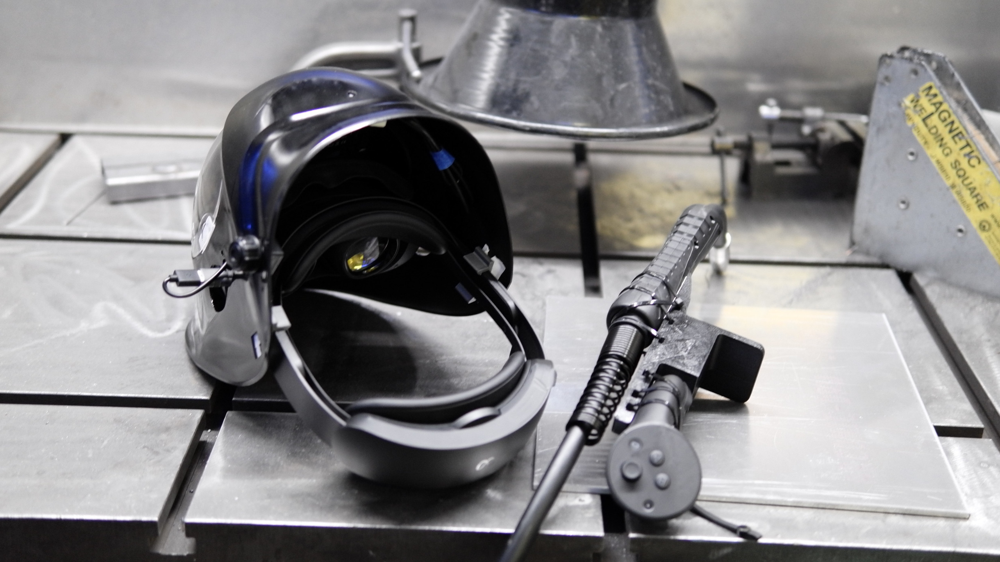
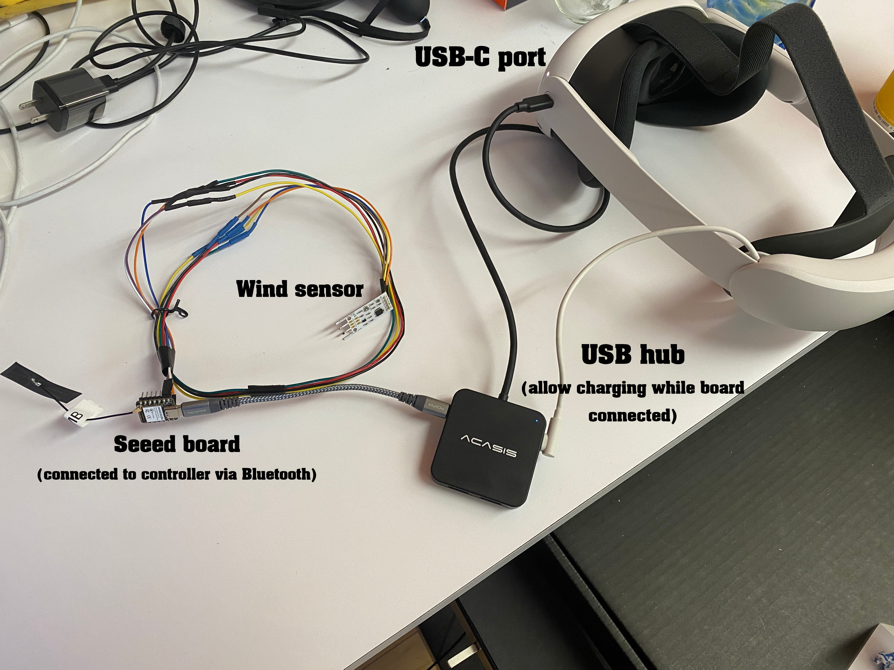

Andrew Knowles
Discrete Math and Game Design Student @ CMU
Discrete Math and Game Design Student @ CMU

A research project with CMU's Embodied Computations Lab studying the potential impact of mixed reality devices in welding training, using Meta Quest Passthrough, Unity, and various microcontrollers.
Because of my experience developing an augmented reality game in the spring of 2023, I was recommended for a research assistant position in the School of Design's Embodied Computations Lab to help develop a mixed reality welding training app. This sounded pretty cool, so I wanted to learn more.
My interest grew as I learned that the project was focused on in-situ welding, which would present some unique challenges. The system would need to track a welding gun's position and give feedback through overlays and haptics while withstanding high heat, sparks, bright flashes, and loud noises. Additionally, it should be flexible, avoiding assumptions about wifi or computer hardware.
After joining the team, the first task was to decide on the hardware for the head-mounted display. The lab had access to various options, which we quickly narrowed down to either a Meta Quest Pro or a phone-based headset such as HoloKit. The former would provide excellent tracking for both head and hands via controllers, at the cost of being less accessible to the public and having slightly worse passthrough. The latter was very accessible and would open up the possiblity of computer vision, though it left the problem of tracking a welding gun unsolved.
In the end, we chose the Quest Pro for its controllers, as well as its ability to track motion when vision from the front-facing cameras was poor (due to the auto-darkening screen in the welding helmet). Lack of computer vision was fine- none of our goals required it (except for the headset's own tracking), and the passthrough quality wasn't noticeably worse than normal vision once an auto-darkener was involved.
As for replicability by others, we knew a cheaper headset solution with decent passthrough would soon be available in the Quest 3 (which we used in later designs).
Our first helmet design had 3D-printed clips for the Quest Pro inside the front of a standard welding helmet, as well as holes cut in the side of the helmet for USB-C access, and to allow side cameras to track motion, We found that front cameras could see pretty well through an auto-darkener, but they would not support tracking by themselves.
To track the welding gun, we designed an attachment for the right controller with a cover to block sparks. The entire attachment was designed to be fastened using zip ties to keep it as portable as possible, but still secure.

There was also a small button placed on the trigger of the gun, which was wired to a board inside the attachment. This board could connect to a board attached to the Quest in the helmet using Bluetooth, allowing us to transmit whether the gun was active without needing excessive wiring.
Our later helmet designs were similar, but were custom designed and 3D printed to fit a Quest 3 instead, as well as being considerably lighter than our original.
We decided to use Unity for a couple of reasons: First, it supported building for VR and Quest without requiring excessive setup. Second, I had experience building apps for Quest in Unity and would be able to more quickly prototype designs compared to a different engine or custom solution.
Setting up the basic app was pretty simple. Passthrough was easy to enable, and once I knew how to orient the virtual welding gun relative to the controller based on the attachment, I could begin prototyping overlays.
In my opinion, the main technical challenge at this point was working with the serial port on the headset. As mentioned, we needed to determine whether the welding gun's trigger was pressed, and we also wanted the possibility of collecting additional sensor data (to measure breathing, for example). We ended up having a Seeed board connected to the Quest using USB-C, which would repeatedly send serial data.
I found a convenient Unity plugin that supported reading serial data on Android devices, which should therefore work for the Quest Pro (which runs on Android). However, I ran into a couple of issues.
First, use of the port required requesting permission from the user. This is handled by editing the app's AndroidManifest.xml file, normally to present a prompt when the app is launched. This didn't seem to work well on the Quest- the permission prompt would render behind regular Quest interfaces and was not interactable. I sideloaded a normal Android serial reader app to test the port in general, and it seemed to display the permission request correctly, so either I messed something up or Quest just really doesn't support this type of permission request.
Switching to using intent filters in order to prompt the user to launch the app when a USB device is connected seemed to work, though, so I opted to use that. It's worth noting that this solution still doesn't seem to be completely supported on the Quest, evidenced by the fact that having more than one app with such an intent filter specified caused the actual device USB service to crash, which is pretty funny.
The second problem involved the app's device_filter.xml file. In order for a USB device to be supported by an Android app, its product and vendor IDs must be specified in this file. This file was included in the plugin I was using, but it didn't specify the board we were trying to work with, so I had to add its product and vendor IDs myself.
Once that was done, we were able to read data from the Seeed board, including whether the gun's trigger was pressed.